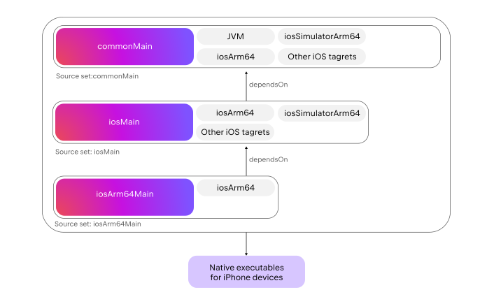
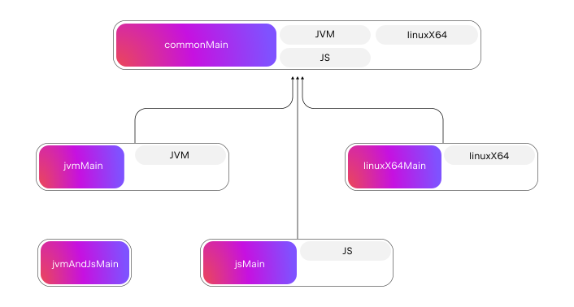
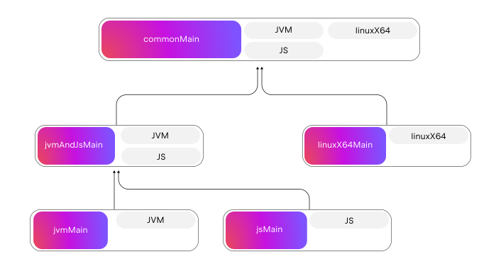
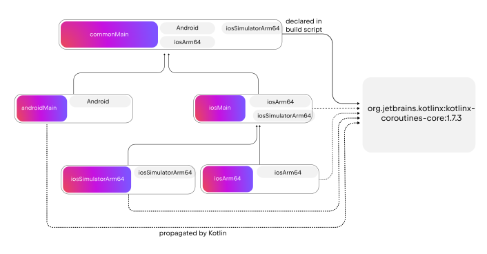
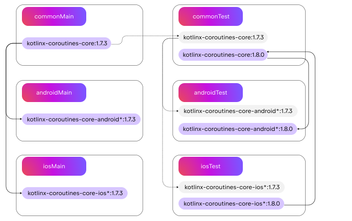

Advanced concepts of the multiplatform project structure
This article explains advanced concepts of the Kotlin Multiplatform project structure and how they map to the Gradle implementation. This information will be useful if you need to work with low-level abstractions of the Gradle build (configurations, tasks, publications, and others) or are creating a Gradle plugin for Kotlin Multiplatform builds.
This page can be useful if you:
Need to share code among a set of targets for which Kotlin doesn't create a source set.
Want to create a Gradle plugin for Kotlin Multiplatform builds, or need to work with low-level abstractions of the Gradle build, such as configurations, tasks, publications, and others.
One of the crucial things to understand about dependency management in a multiplatform project is the difference between Gradle-style project or library dependencies and the
dependsOn
relation between source sets that is specific to Kotlin:
dependsOn
is a relation between common and platform-specific source sets that enables
source set hierarchy
and sharing code in multiplatform projects in general. For default source sets the hierarchy is managed automatically, but you may need to alter it in specific circumstances.
Library and project dependencies in general work as usual, but to properly manage them in a multiplatform project you should understand
how Gradle dependencies are resolved
into granular
source set → source set
dependencies used for compilation.
dependsOn and source set hierarchies
Usually, you'll be working with
dependencies
and not with the
dependsOn
relation. However, examining
dependsOn
is crucial to understanding how Kotlin Multiplatform projects work under the hood.
dependsOn
is a Kotlin-specific relation between two Kotlin source sets. This could be a connection between common and platform-specific source sets, for example, when the
jvmMain
source set depends on
commonMain
,
iosArm64Main
depends on
iosMain
, and so on.
Consider a general example with Kotlin source sets
A
and
B
. The expression
A.dependsOn(B)
instructs Kotlin that:
A
observes the API from
B
, including internal declarations.
A
can provide actual implementations for expected declarations from
B
. This is a necessary and sufficient condition, as
A
can provide
actuals
for
B
if and only if
A.dependsOn(B)
either directly or indirectly.
B
should compile to all the targets that
A
compiles to, in addition to its own targets.
A
inherits all the regular dependencies of
B
.
The
dependsOn
relation creates a tree-like structure known as a source set hierarchy. Here's an example of a typical project for mobile development with
androidTarget
,
iosArm64
(iPhone devices), and
iosSimulatorArm64
(iPhone simulator for Apple Silicon Mac):
Arrows represent
dependsOn
relations. These relations are preserved during the compilation of platform binaries. This is how Kotlin understands that
iosMain
is supposed to see the API from
commonMain
but not from
iosArm64Main
:

dependsOn
relations are configured with the
KotlinSourceSet.dependsOn(KotlinSourceSet)
call, for example:
kotlin {
// Targets declaration
sourceSets {
// Example of configuring the dependsOn relation
iosArm64Main.dependsOn(commonMain)
}
}
This example shows how
dependsOn
relations can be defined in the build script. However, the Kotlin Gradle plugin creates source sets and sets up these relations by default, so you don't need to do so manually.
dependsOn
relations are declared separately from the
dependencies {}
block in build scripts. This is because
dependsOn
is not a regular dependency; instead, it is a specific relation between Kotlin source sets necessary for sharing code across different targets.
You cannot use
dependsOn
to declare regular dependencies on a published library or another Gradle project. For example, you can't set up
commonMain
to depend on the
commonMain
of the
kotlinx-coroutines-core
library or call
commonTest.dependsOn(commonMain)
.
Declaring custom source sets
In some cases, you might need to have a custom intermediate source set in your project. Consider a project that compiles to the JVM, JS, and Linux, and you want to share some sources only between the JVM and JS. In this case, you should find a specific source set for this pair of targets, as described in
The basics of multiplatform project structure
.
Kotlin doesn't create such a source set automatically. This means you should create it manually with the
by creating
construction:
kotlin {
jvm()
js()
linuxX64()
sourceSets {
// Create a source set named "jvmAndJs"
val jvmAndJsMain by creating {
// …
}
}
}
However, Kotlin still doesn't know how to treat or compile this source set. If you drew a diagram, this source set would be isolated and wouldn't have any target labels:

To fix this, include
jvmAndJsMain
in the hierarchy by adding several
dependsOn
relations:
kotlin {
jvm()
js()
linuxX64()
sourceSets {
val jvmAndJsMain by creating {
// Don't forget to add dependsOn to commonMain
dependsOn(commonMain.get())
}
jvmMain {
dependsOn(jvmAndJsMain)
}
jsMain {
dependsOn(jvmAndJsMain)
}
}
}
Here,
jvmMain.dependsOn(jvmAndJsMain)
adds the JVM target to
jvmAndJsMain
, and
jsMain.dependsOn(jvmAndJsMain)
adds the JS target to
jvmAndJsMain
.
The final project structure will look like this:

Dependencies on other libraries or projects
In multiplatform projects, you can set up regular dependencies either on a published library or on another Gradle project.
Kotlin Multiplatform generally declares dependencies in a typical Gradle way. Similarly to Gradle, you:
Use the
dependencies {}
block in your build script.
Choose the proper scope for the dependencies, for example,
implementation
or
api
.
Reference the dependency either by specifying its coordinates if it's published in a repo, like
"com.google.guava:guava:32.1.2-jre"
, or its path if it's a Gradle project in the same build, like
project(":utils:concurrency")
.
Dependency configuration in multiplatform projects has some special features. Each Kotlin source set has its own
dependencies {}
block. This allows you to declare platform-specific dependencies in platform-specific source sets:
kotlin {
// Targets declaration
sourceSets {
jvmMain.dependencies {
// This is jvmMain's dependencies, so it's OK to add a JVM-specific dependency
implementation("com.google.guava:guava:32.1.2-jre")
}
}
}
Common dependencies are trickier. Consider a multiplatform project that declares a dependency on a multiplatform library, for example,
kotlinx.coroutines
:
kotlin {
androidTarget() // Android
iosArm64() // iPhone devices
iosSimulatorArm64() // iPhone simulator on Apple Silicon Mac
sourceSets {
commonMain.dependencies {
implementation("org.jetbrains.kotlinx:kotlinx-coroutines-core:1.7.3")
}
}
}
There are three important concepts in dependency resolution:
Multiplatform dependencies are propagated down the
dependsOn
structure. When you add a dependency to
commonMain
, it will be automatically added to all source sets that declare
dependsOn
relations directly or indirectly in
commonMain
.
In this case, the dependency was indeed automatically added to all the
*Main
source sets:
iosMain
,
jvmMain
,
iosSimulatorArm64Main
, and
iosX64Main
. All these source sets inherit the
kotlin-coroutines-core
dependency from the
commonMain
source set, so you don't have to copy and paste it in all of them manually:

The
source set → multiplatform library
dependencies, like
commonMain
to
org.jetbrians.kotlinx:kotlinx-coroutines-core:1.7.3
above, represent the intermediate state of dependency resolution. The final state of resolution is always represented by the
source set → source set
dependencies.
To infer granular
source set → source set
dependencies, Kotlin reads the source set structure that is published alongside each multiplatform library. After this step, each library will be represented internally not as a whole, but as a collection of its source sets. See this example for
kotlinx-coroutines-core
:
Kotlin takes each dependency relation and resolves it to a collection of source sets from a dependency. Each dependency source set in that collection must have
compatible targets
. A dependency source set has compatible targets if it compiles to
at least the same targets
as the consumer source set.
Consider an example where
commonMain
in the sample project compiles to
androidTarget
,
iosX64
, and
iosSimulatorArm64
:
First, it resolves a dependency on
kotlinx-coroutines-core.commonMain
. This happens because
kotlinx-coroutines-core
compiles to all possible Kotlin targets. Therefore, its
commonMain
compiles to all possible targets, including the required
androidTarget
,
iosX64
, and
iosSimulatorArm64
.
Second,
commonMain
depends on
kotlinx-coroutines-core.concurrentMain
. Since
concurrentMain
in
kotlinx-coroutines-core
compiles to all the targets except for JS, it matches the targets of the consumer project's
commonMain
.
However, source sets like
iosX64Main
from coroutines are incompatible with the consumer's
commonMain
. Even though
iosX64Main
compiles to one of the targets of
commonMain
, namely,
iosX64
, it doesn't compile either to
androidTarget
or to
iosSimulatorArm64
.
The results of the dependency resolution directly affect which of the code in
kotlinx-coroutines-core
is visible:
Aligning versions of common dependencies across source sets
In Kotlin Multiplatform projects, the common source set is compiled several times to produce a klib and as a part of each configured
compilation
. To produce consistent binaries, common code should be compiled against the same versions of multiplatform dependencies each time. The Kotlin Gradle plugin helps align these dependencies, ensuring the effective dependency version is the same for each source set.
In the example above, imagine that you want to add the
androidx.navigation:navigation-compose:2.7.7
dependency to your
androidMain
source set. Your project explicitly declares the
kotlinx-coroutines-core:1.7.3
dependency for the
commonMain
source set, but the Compose Navigation library with the version 2.7.7 requires Kotlin coroutines 1.8.0 or newer.
Since
commonMain
and
androidMain
are compiled together, the Kotlin Gradle plugin chooses between the two versions of the coroutines library and applies
kotlinx-coroutines-core:1.8.0
to the
commonMain
source set. But to make the common code compile consistently across all configured targets, iOS source sets also need to be constrained to the same dependency version. So Gradle propagates the
kotlinx.coroutines-*:1.8.0
dependency to the
iosMain
source set as well.
Dependencies are aligned separately across the
*Main
source sets and the
*Test
source sets
. The Gradle configuration for
*Test
source sets includes all dependencies of
*Main
source sets, but not vice versa. So you can test your project with newer library versions without affecting your main code.
For example, you have the Kotlin coroutines 1.7.3 dependency in your
*Main
source sets, propagated to every source set in the project. However, in the
iosTest
source set, you decide to upgrade the version to 1.8.0 to test out the new library release. According to the same algorithm, this dependency is going to be propagated throughout the tree of
*Test
source sets, so every
*Test
source set will be compiled with the
kotlinx.coroutines-*:1.8.0
dependency.

Compilations
Contrary to single-platform projects, Kotlin Multiplatform projects require multiple compiler launches to build all the artifacts. Each compiler launch is a
Kotlin compilation
.
For example, here's how binaries for iPhone devices are generate during this Kotlin compilation mentioned earlier:
Kotlin compilations are grouped under targets. By default, Kotlin creates two compilations for each target, the
main
compilation for production sources and the
test
compilation for test sources.
Compilations in build scripts are accessed in a similar manner. You first select a Kotlin target, then access the
compilations
container inside, and finally choose the necessary compilation by its name:
kotlin {
// Declare and configure the JVM target
jvm {
val mainCompilation: KotlinJvmCompilation = compilations.getByName("main")
}
}